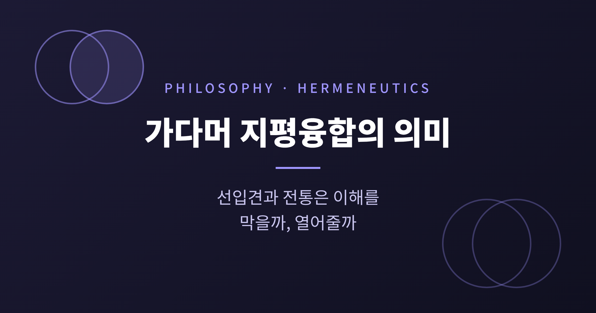
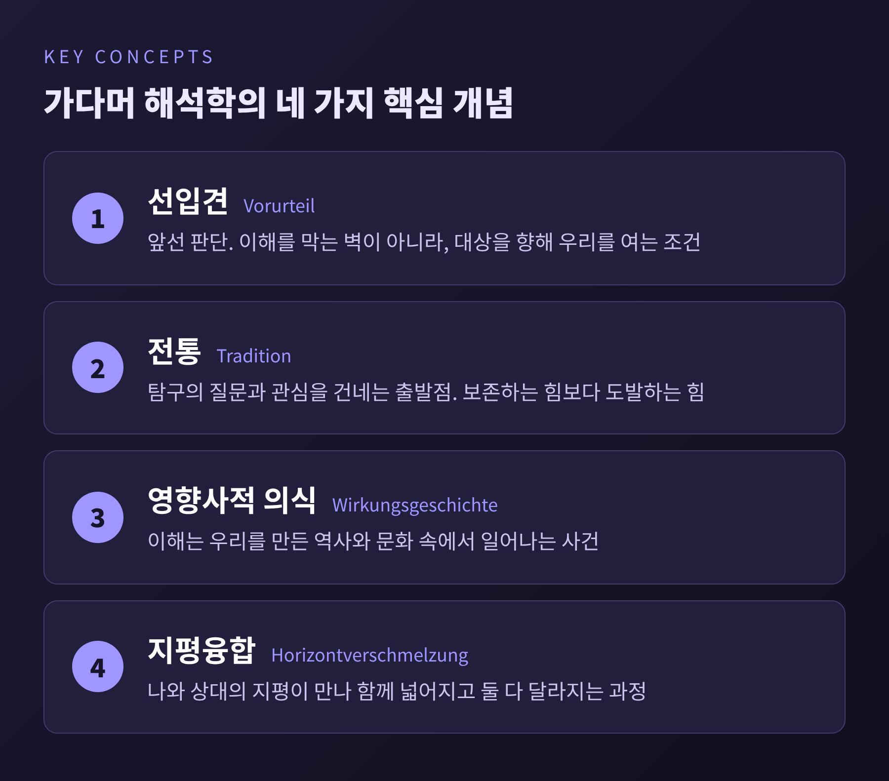
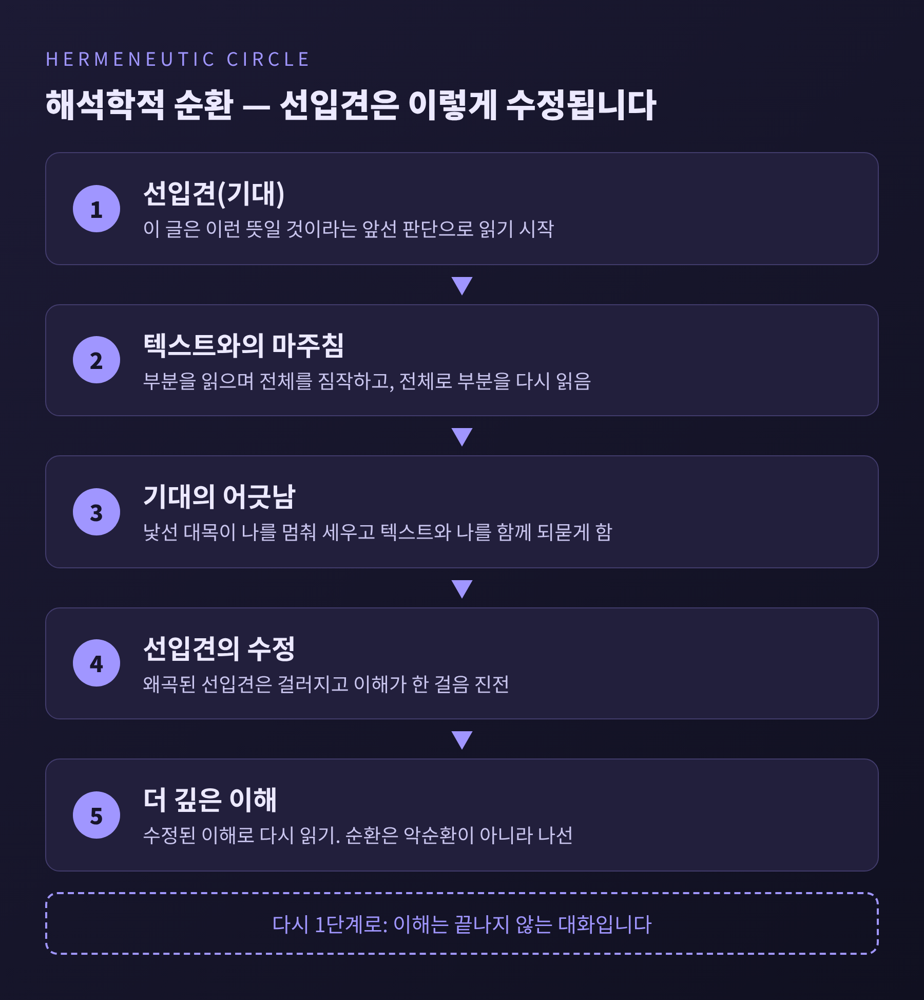
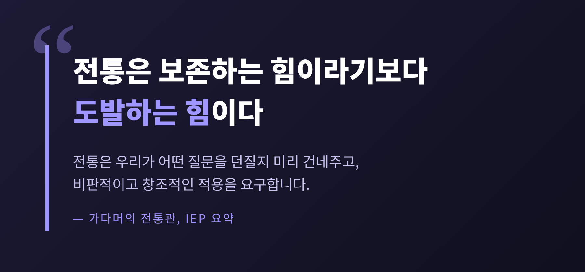
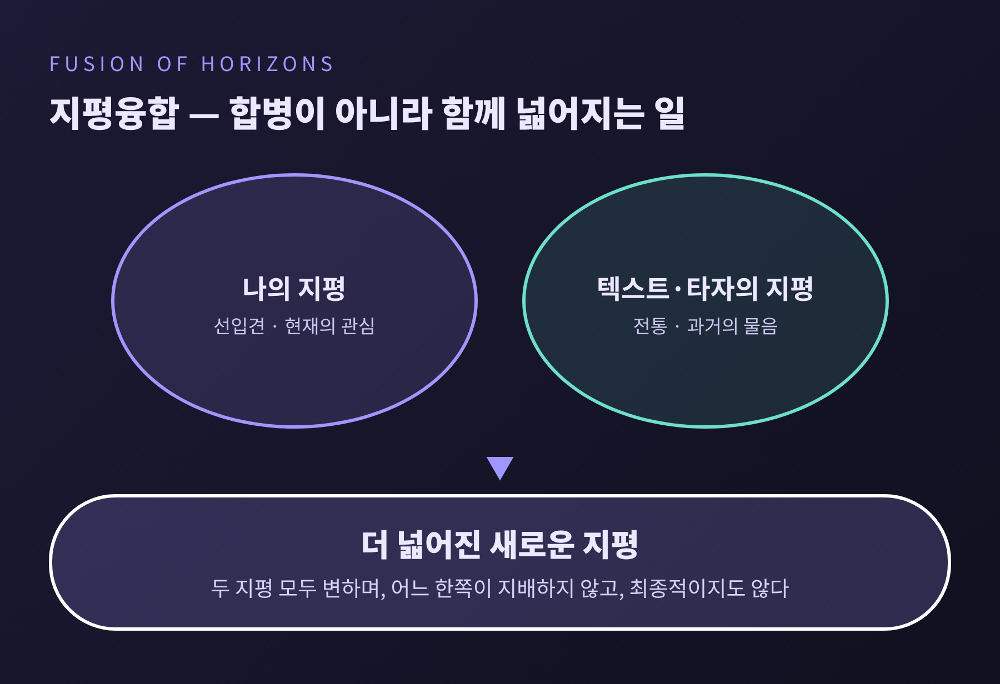
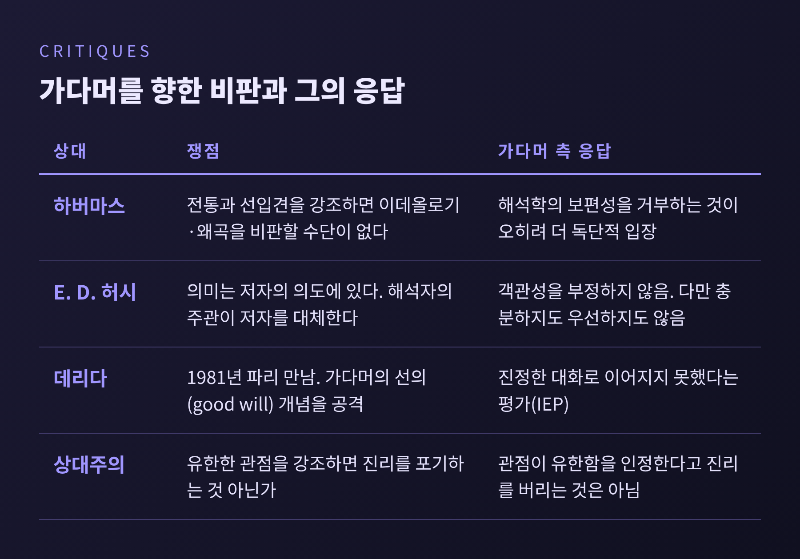

오늘은 한스게오르크 가다머의 철학적 해석학을 정리해 보려 합니다.
핵심은 하나입니다. 이해는 선입견을 지운 자리에서 일어나지 않고, 선입견과 전통 위에서 두 지평이 만나 넓어지는 사건이라는 것입니다.
이 글에서는 선입견의 복권, 전통과 권위, 지평융합, 그리고 이에 대한 비판까지 차례로 살펴봅니다.

한스게오르크 가다머는 1900년 2월 11일 독일 마르부르크에서 태어나 2002년 3월 13일 하이델베르크에서 102세로 세상을 떠났습니다.
1923년 프라이부르크에서 후설과 하이데거의 강의를 들으며 하이데거와 평생에 걸친 인연이 시작됐습니다.
1949년에는 카를 야스퍼스의 후임으로 하이델베르크 대학에 자리를 잡았고, 1968년 명예교수가 되었습니다.
그의 대표작 『진리와 방법』(Wahrheit und Methode)은 1960년, 그가 예순 살이던 해에 나왔습니다.
영어 번역은 1975년, 개정판은 1989년에 나왔습니다.
브리태니커는 이 책을 20세기 해석학 이론의 주요 철학적 진술로 평가받는다고 소개합니다.
제목이 이미 질문을 던지고 있습니다.
과학적 방법을 따르면 진리에 닿는다는 믿음이 정말 전부일까요.
가다머는 방법의 통제가 미치지 않는 곳에서도 "진리의 경험"이 일어난다고 보았습니다.
방법이나 과학을 거부한 것은 아닙니다. 그는 방법이 모든 것을 설명한다는 총체적 주장에 반대했을 뿐입니다.
책은 크게 세 갈래로 흐릅니다.
예술 경험과 놀이를 다루는 부분, 선입견·전통·권위·지평을 다루는 역사적 이해의 부분, 그리고 언어를 다루는 부분입니다.
이 글이 따라가는 것은 그중 가운데 갈래입니다.
독일어 Vorurteil은 '앞선 판단', 곧 pre-judgment를 뜻합니다.
우리말 '선입견'에는 부정적 색이 짙지만, 가다머는 이 말을 가치중립적으로 씁니다.
선입견은 이해하려는 대상을 향해 우리를 열어 주는 조건이라는 것입니다.
계몽주의는 모든 선입견을 걷어내야 참된 인식에 이를 수 있다고 보았습니다.
가다머는 여기에 "선입견에 대한 선입견"이라는 이름을 붙입니다.
『진리와 방법』의 해당 장은 모든 선입견을 극복하라는 계몽의 요구가 "그 자체로 하나의 선입견임이 드러날 것"이라고 주장합니다.
선입견 없는 앎은 가능하지도, 바람직하지도 않다는 이야기입니다.
예를 들어 보겠습니다. 낯선 철학책을 펼칠 때 우리는 빈 머리로 읽지 않습니다.
이 글은 무엇을 말하려는 것일 것이라는 기대를 안고 첫 문장을 읽습니다.
그 기대가 있어야 문장의 뜻이 잡힙니다. 기대가 빗나가는 순간 비로소 "내가 잘못 읽었나" 하고 되묻게 됩니다.
여기서 해석학적 순환이 나옵니다.
부분을 읽으며 전체를 짐작하고, 짐작한 전체로 부분을 다시 읽습니다.
이 순환은 반드시 악순환이 아닙니다. 선입견은 해석이 진행되는 동안 수정에 열려 있는 형태로 작동합니다.
다만 이해에는 전제가 하나 깔려 있습니다. 이해하려는 대상이 일관되고 의미 있다는 가정, 가다머가 말한 "완전성의 선취"입니다.
물론 모든 선입견이 옳다는 뜻은 아닙니다.
가다머도 일부 선입견은 이해를 왜곡한다고 인정합니다.
시간적 거리가 그런 선입견을 걸러내는 데 도움이 될 수 있다고 보았습니다.
자신과 다른 관점과 마주칠 때 비로소 텍스트와 나 자신을 함께 되묻게 된다는 점도 중요합니다.

전통이라고 하면 낡은 것을 지키는 일을 떠올리기 쉽습니다.
가다머의 생각은 다릅니다. 전통 없이 출발하는 탐구는 없다는 것입니다.
전통은 우리가 어떤 질문을 던질지, 무엇에 관심을 둘지를 미리 건네줍니다.
우리가 쓰는 언어부터가 우리가 만든 것이 아닙니다.
IEP는 이를 "전통은 보존하는 힘이라기보다 도발하는 힘"이라고 요약합니다.
전통을 받아들이려면 비판적이고 창조적으로 적용해야 하고, 혁명조차 맞서는 전통에서 재료를 끌어온다고 설명합니다.
권위에 대한 시각도 같은 결입니다.
참된 권위는 맹목적 복종이 아니라 능동적 인정을 필요로 합니다.
그런 인정이 빠지면 권위는 "수동적 복종, 곧 폭정"이 됩니다.
외운 텍스트를 되풀이하는 것은 이해가 아니고, 자기 말로 다시 표현할 수 있어야 이해라는 설명도 같은 맥락입니다.
여기서 전통은 하나의 덩어리가 아닙니다.
서로 다른 견해가 한데 모이는 자리가 전통이며, 가다머가 고전을 강조한 까닭도 거기에 있습니다.
예전에는 전통을 극복의 대상으로 보았다면, 가다머는 그 안에서 이미 살고 있다는 사실에서 출발합니다.

지평(Horizont)은 우리가 볼 수 있는 범위의 한계입니다.
그런데 이 한계는 막힌 벽이 아닙니다. 한계가 있어야 시점이 생기고, 시점이 있어야 무언가를 볼 수 있습니다.
IEP에 따르면 지평에는 뒤로는 전통, 둘레로는 현재의 문화, 앞으로는 기대가 들어 있습니다.
가다머의 표현으로는 "우리가 그 안으로 들어가고, 우리와 함께 움직이는 것"입니다.
그래서 지평은 역사적으로 규정되지만 고정되어 있지 않습니다.
가다머는 우리가 닫힌 지평 안에도, 유일한 하나의 지평 안에도 있지 않다고 말합니다.
두 가지 환상을 함께 물리치는 말입니다. 하나는 보편사를 단일한 지평에 담을 수 있다는 절대지식의 환상이고, 다른 하나는 나를 잊고 중립적으로 타인을 볼 수 있다는 객관성의 환상입니다.
지평융합(Horizontverschmelzung)은 이 위에서 일어납니다.
독자의 처음 견해와 텍스트의 주장이 만나, 어느 쪽도 따로 가졌던 것보다 풍부한 이해가 만들어집니다.
익숙한 것과 낯선 것이 서로를 매개하며, 어느 쪽도 그대로 남지 않습니다.
오해하기 쉬운 지점이 있습니다.
융합은 고정된 두 세계를 합치는 일이 아닙니다.
한 지평이 다른 지평을 지배하는 것도 아니고, 총체적이거나 최종적인 것도 아닙니다.
"역사적 지평이 투사되는 순간 그것은 동시에 지양된다"는 문장이 이 점을 잘 보여 줍니다.
과거를 이해하려는 시도는 과거와 현재가 완전히 분리되어 있지 않음을 드러내고, 그 과정에서 두 지평이 모두 달라집니다.
옛 고전을 읽는 일이 좋은 예입니다.
플라톤을 읽는다고 고대 아테네로 건너갈 수는 없습니다. 그렇다고 오늘의 잣대로 재단하면 플라톤이 말을 걸어올 틈이 없습니다.
내 물음을 가지고 텍스트 앞에 서고, 텍스트가 되묻는 말에 내가 흔들릴 때 이해가 시작됩니다.
가다머가 질문의 우위를 강조하고, 이해의 일부로 현재에의 적용을 포함시킨 까닭입니다.
적용은 이해가 끝난 뒤의 덤이 아니라 "처음부터 이해 전체를 공동으로 규정한다"고 그는 썼습니다.

가다머는 이를 영향사적 의식(wirkungsgeschichtliches Bewusstsein)이라 부릅니다.
이해는 우리가 대상 바깥에서 관찰하는 일이 아니라, 우리를 만든 역사와 문화 속에서 일어난다는 뜻입니다.
역사적 상황은 단순한 족쇄가 아닙니다. 한계가 오히려 열림을 가능하게 한다고 봅니다.
앤드루 보위는 이 개념이 '의식'보다 '존재'에 가깝다고 풀이합니다.
내가 역사를 대상으로 삼기 전에, 나는 이미 역사의 효과 속에 있다는 이야기입니다.
언어에 대한 생각도 이어집니다. 가다머는 "이해될 수 있는 존재는 언어"라고 했습니다.
모든 것이 언어라는 말이 아니라, 이해가 언어를 통해 이루어진다는 말입니다.
균형을 위해 비판도 짚어 두겠습니다.
가장 유명한 상대는 위르겐 하버마스입니다.
하버마스는 전통과 선입견을 강조하면 이데올로기나 왜곡된 이해를 비판할 수단이 사라진다고 보았습니다.
"해석학적 의식은 반성을 자기 안에 통합하지 않는 한 불완전하다"는 그의 문장이 요점을 담고 있습니다.
SEP는 하버마스가 이를 이데올로기적 보수주의의 증거로 읽었다고 전합니다.
가다머의 응답은 이랬습니다.
해석학의 보편성을 거부하는 쪽이야말로, 주체가 과거에서 벗어날 수 있다는 근대적 믿음을 받아들인 더 독단적인 입장이라는 것입니다.
논쟁은 결론 없이 끝났지만 두 사람 사이에는 따뜻한 관계가 시작되었고, 가다머는 하버마스의 하이델베르크 첫 교수직을 돕기도 했습니다.
E. D. 허시는 1965년 논문과 1967년 저서에서, 의미는 저자의 의도에 있다고 맞섰습니다.
가다머의 접근이 해석자의 주관으로 저자를 대체한다는 비판이었습니다.
가다머는 객관성의 가치를 부정하지 않았습니다. 그것이 충분하지도, 우선하지도 않는다고 답했을 뿐입니다.
데리다와의 1981년 파리 만남은 진정한 대화가 되지 못했다는 평가가 많습니다.
IEP는 데리다의 응답이 가다머의 핵심을 비껴갔다고 적습니다.
한편 『진리와 방법』 자체가 문헌학적으로 결함이 있고 논증이 모호하다는 지적도 있습니다.
유한성을 강조하는 입장이 상대주의로 흐른다는 의심도 늘 따라붙었습니다. 가다머는 관점이 유한하다는 인정이 진리의 포기는 아니라고 답했습니다.

저는 이 논쟁들이 가다머의 약점만큼이나 그의 요점을 또렷하게 해 준다고 생각합니다.
전통에 대한 신뢰는 전통에 대한 비판과 함께 가야 하고, 그 비판 역시 어떤 지평 위에서만 가능하다는 점입니다.
정리하면 이렇습니다.
이해는 빈 상태에서 출발하지 않고, 선입견은 이해의 장애물이 아니라 조건이며, 전통은 우리를 가두기보다 질문을 건네줍니다.
그리고 이해가 일어나는 순간 나의 지평과 상대의 지평은 모두 달라집니다.
오래된 책을 읽든, 나와 다른 생각을 가진 사람과 이야기하든 마찬가지입니다.
내가 어떤 선입견을 가지고 앉았는지 알아차리는 일이 첫걸음입니다.
그 선입견이 수정될 수 있도록 열어 두는 일이 두 번째입니다.
"이해란 지평이 서로를 만나 넓어지는 일이다."
내가 한 치도 달라지지 않았다면, 그것은 아직 이해하지 못했다는 신호일지 모릅니다.